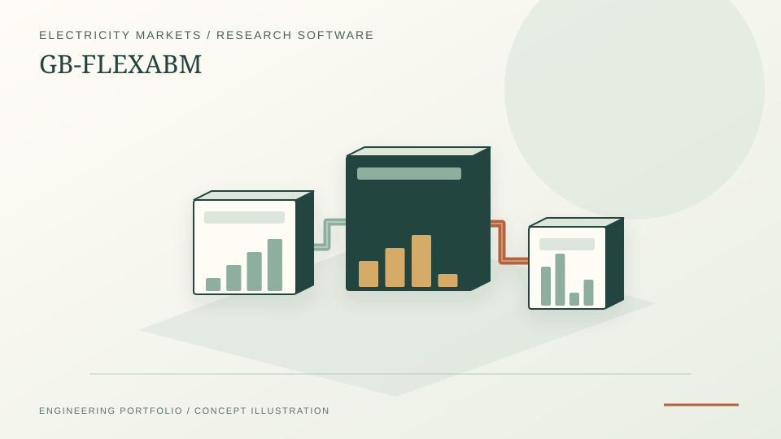
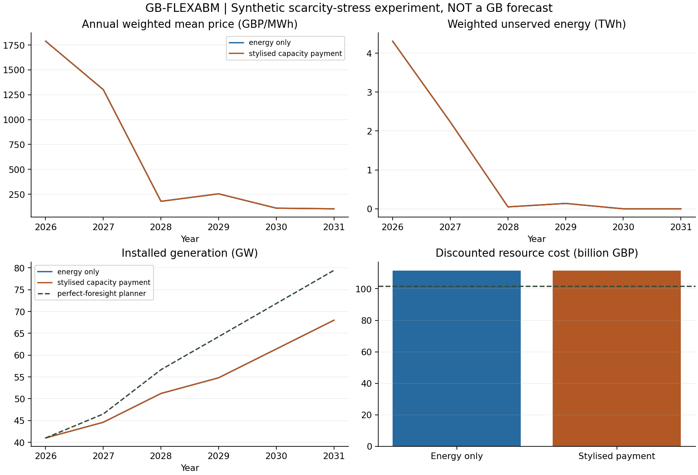

Local GUI and CLI share one engine, with numerical replay and verified exports.
Independent research software · Energy markets · 2026
GB-FLEXABM
Who builds the next megawatt?
A transparent electricity investment experiment: heterogeneous investor agents versus a perfect-foresight central planner, connected by the same physical dispatch model. The core contribution is a controlled comparison: separate investor behaviour from physical dispatch assumptions and expose why an experimental policy effect may be zero.
PythonPyomoHiGHSStreamlitNumPypytest

PROJECT REFERENCE / GB-FLEXABM175 public references acquired/extracted; 804 Elexon responses preserve failed coverage gates. No raw-data publication, silent target substitution or empirical calibration claim.
Software v0.3 · Exploratory and synthetic. Local experiment GUI, training-data guards and bounded ERA5 acquisition. Not an empirically calibrated GB forecast, official market model or university-affiliated project.
01 / Research question
Market decisions and system planning are not the same problem.
How do adaptive price expectations, finance budgets, build delays and a stylised capacity payment change electricity investment relative to an ideal central planner? A meaningful comparison needs common physical constraints and consistent cost accounting before it needs more complex behaviour.
02 / Modelling approach
Optimisation, behaviour and an auditable annual loop.
Shared dispatch
Pyomo and HiGHS solve a single-node electricity LP with gas, peaker, wind, solar, fixed storage and explicit unserved demand. Marginal-price duals are divided by the correct time weights. Storage state uses physical duration, not repetition weight.
Planning benchmark
A continuous multi-year expansion LP includes asset vintages, construction lags, annual build limits, fixed O&M and terminal asset value. Its resource objective is independently recomputed and checked as a lower bound on the feasible agent outcome.
Investor agents
Technology-specialist investors update expectations from completed market years, assess lifetime NPV, and submit budget-limited requests. Named random substreams preserve repeatability. Simultaneous requests are rationed pro rata when a build ceiling binds.
Accounting distinction: the fixed capacity payment changes investor receipts and is recorded separately. It is a transfer, not an additional resource cost. This stylised treatment does not reproduce the official GB Capacity Market auction.
Local experiment workbench / New in v0.2
Configure. Run. Inspect the evidence.
A Streamlit GUI calls the same Pyomo/HiGHS experiment engine as the command line. Set demand, growth, horizon, period count, payment rate and paired seeds; run both market designs; then inspect the chart, audit tables, saved assumptions and source manifest.
Bounded experiments
24, 48 or 168 synthetic periods; 2–6 years; 1–10 paired seeds. Runs start only on submission. Larger studies remain explicit CLI workflows.
Verified downloads
Reopen local runs or export a verified ZIP and YAML scenario. Each run gets a fresh folder. Failed or tampered results do not retain a success badge or download controls.
Data readiness
Check a local NESO demand manifest against an entire declared calendar year, including leap days and DST. Historical observations still do not feed the synthetic experiment.
git clone https://github.com/abhijith-sivaprasadan/gb-flexabm.git
cd gb-flexabm
uv sync --locked --extra dev --extra gui
uv run --locked --extra gui gbflex guiOpen http://127.0.0.1:8501 on the same computer. Requires Python 3.12/3.13 and uv. The launcher uses dark text on light surfaces, binds locally and disables usage telemetry. Use --port 8502 if needed.
Local software, not a hosted dashboard: GitHub Pages serves this case study. The Python solver runs on your computer. GUI results remain exploratory and uncalibrated; successful checks establish internal properties, not real-market predictive accuracy.
03 / Reproduced experiment
A zero-effect result is still a result.
The preserved v0.1 reference experiment runs 2026–2031 with one repeated synthetic 168-hour block per year, 20 paired seeds and two designs: energy-only and a fixed, stylised capacity payment. The initial fleet intentionally creates scarcity. These are the original reference results, not an assertion that every GUI scenario produces the same outcome.
| Quantity | Observed model result |
|---|---|
| Planner resource NPV | £101.663 billion |
| Agent resource NPV, either design | £111.459 billion |
| Payment minus energy-only resource NPV | £0 in every paired seed |
| Payment receipts over six years | £11.467 billion, undiscounted; excluded from resource NPV |
Investment scores remain positive and annual finance budgets constrain requests in this fixture. Adding the payment therefore does not change accepted investment. Random expectation errors change scores without crossing investment thresholds, so the displayed physical outcomes have no seed spread. This does not establish that capacity payments are ineffective in real markets.


The approximately £9.795 billion planner–agent gap is conditional on foresight, investor budgets and decision rules. It is not a general estimate of market inefficiency or a policy benefit.
Research update / 26 October 2026
Why was the capacity-payment response exactly zero?
A separate five-variant investor-mechanism study completed 120 synthetic trajectories (12 common seeds, two payment treatments and five investor variants). None of its 60 matched payment comparisons changed accepted construction or modelled physical outcomes. Financing restrictions themselves did change synthetic resource costs; this is not an identified effect in the actual GB electricity market.
A subsequent source-rule audit reconstructed all 600 seed–year–investor decisions in the archived original 20-seed reference. The breakdown is unusually clear: 440 decisions were already profitable without the capacity payment; the remaining 160 were blocked by the experiment's terminal commissioning horizon. None crossed the payment-dependent entry threshold, and requests did not change. The audit checks the recorded expected margins, project NPV and requested MW against the source implementation.
These findings identify the reason for the reference model's nonresponse under its chosen assumptions. They do not imply that real capacity markets are ineffective or that actual GB generators follow this rule.
Investor-mechanism research note · Methods and independent decision-rule audit
Historical price-data bottleneck persists: A new offline original Elexon MID/APXMIDP archive preflight can check 46/48/50-period settlement calendars, revisions, duplicate entries, missing records, zero traded volume and source hashes. No authentic replacement archive has been obtained or admitted. None of the 2013–2018 APXMIDP training years is complete under the existing API audit; historical investor calibration and holdout evaluation remain blocked.
04 / Research-software practice
Evidence you can inspect and rerun.
- Scientific tests: analytical dispatch costs and dual prices, weighted storage balance, build/retirement timing, capacity-payment units, budget limits, solver failure handling and metamorphic monotonicity checks.
- Reproduction: the 20-seed experiment was repeated, with numerical CSV agreement at rtol 1e-8 and atol 1e-5. Source commit, assumptions, seeds, solver settings and output hashes are recorded.
- Performance: single-year synthetic dispatch measured 0.48 s for 168 periods and 25.11 s for 8,760 periods on the recorded Windows machine. Peak Python allocations were about 4.2 MB and 179.6 MB; this excludes native solver memory and is not peak RSS.
- Observed-data foundation: the separate NESO adapter successfully read 17,568 half-hour 2024 demand records (8,784 hours), with UTC/DST and checksum checks. These observations do not drive the synthetic results above.
- Workbench regression checks: real GUI execution numerically matches the CLI; saved assumptions, failed reruns, tamper rejection and verified-only exports are tested. The new calendar gate rejects missing leading/trailing intervals and confirms complete coverage of the previously acquired 2024 file.
git clone https://github.com/abhijith-sivaprasadan/gb-flexabm.git
cd gb-flexabm
uv sync --locked --extra dev --extra gui --extra research
uv run --locked --extra gui --extra research pytest -q
uv run --locked python scripts/reproduce.py --output runs/referenceRequires Python 3.12/3.13 and uv. Install dependencies once; the experiment then runs offline. Output directories must be fresh. Hash verification establishes file integrity—not empirical validity.
Verification record · Live scientific CI · Contribute or challenge an assumption
Delivery status / Updated 26 October 2026
Historical data work, with explicit unfinished gates.
| Stage | Scope | Status |
|---|---|---|
| S0 | Shared electricity model, investors, audit trails and reference experiment | Done · v0.1 |
| S1 | Local GUI, whole-year demand validation and delivery contract | Implemented · v0.2 |
| S2 | Demand/ERA5 tooling, 804 Elexon responses and 175 additional acquired/extracted public references | In progress · original price-archive preflight now available; price-target admission, source reconciliation and weather conversion still pending |
| S3–S5 | Medoid/dispatch diagnostics, trial/sensitivity records and evaluation metrics | Utilities tested · empirical calibration/evaluation pending |
| S6 | Zonal systems, flexibility, heat and hydrogen | Deferred |
Every milestone requires tested code, updated README and portfolio evidence, commits pushed to both remotes, and verified CI/Pages publication. Software delivery does not itself satisfy a scientific validation gate.
Data acquisition: the plan requests 12 hourly wind, solar and temperature fields over a GB/offshore bounding box, in 72 monthly training batches (2013–2018), plus one static terrain/mask download. Jobs are resumable; raw data and credentials are not published. Raw weather still needs fleet-weighted availability conversion. Fleet, cost, price and policy integration remain unfinished.
Actual market-data finding: 402 price and 402 generation responses have been acquired and audited for 2013–2018. No APXMIDP price year passes complete coverage: there are no observations in 2013–2015, partial 2016 data, and 334/252 missing half-hours in 2017/2018 respectively, plus zero-volume periods. Generation has gaps and auxiliary timestamp-label defects. The GUI displays these failed gates; no filling, provider substitution or silent date-window change has been applied.
Inspect the source audits, archive findings and required decision before fitting
Public-source extraction: 175 files (443.50 MiB) have been acquired, mechanically extracted and rehashed without paid services. They include fuel prices, CPI/FX, 114 carbon-auction reports, technology costs, REPD fleet records, all eight NESO Capacity Market files and LCCC/Ofgem policy references. The supplied IMRP series starts on 30 June 2016; its 2017/2018 native hourly-period keys are complete, but it is a different price product and has not replaced APXMIDP. Originals stay local. PDF extraction is not certified numeric-table data, and current fleet/policy files are not historical snapshots.
Public-input inventory, extraction safeguards, access exceptions and next S2 work
Prior data exposure: 2024 demand was inspected for ingestion and annual totals; the new mechanical extraction also includes later observations and current revisions. The proposed historical windows remain draft, not preregistered or claimed untouched. IMRP numeric QA is training-only. No historical behaviour has been fitted, no split changed and no independent scientific review is claimed.
Exact weather selection, monthly download commands and complete data checklist
05 / Interpretation and next research gates
A foundation for energy-system research, with explicit boundaries.
This project demonstrates Python optimisation, agent-based modelling, experiment design, public-data handling and reproducible technical reporting. Those methods are relevant to energy-system modelling and market-design research; the project is independent and does not imply employment, funding or institutional affiliation.
Not implemented or established: empirical calibration and holdout validation, transmission and unit commitment, forced-outage adequacy, probabilistic LOLE, official Capacity Market/CfD mechanisms, endogenous storage investment, or integrated heat and hydrogen behaviour.
The short repeated block and the full synthetic year produce different scarcity outcomes; the former is not an established annual approximation. Next steps require multi-weather-year data, behavioural identification, sensitivity and seed-convergence studies, external model comparison and separately verified cross-vector energy balances.
Source context: NESO Historic Demand Data and Pyomo solver documentation. Original code and synthetic fixtures: MIT. Publisher data retain their own terms.